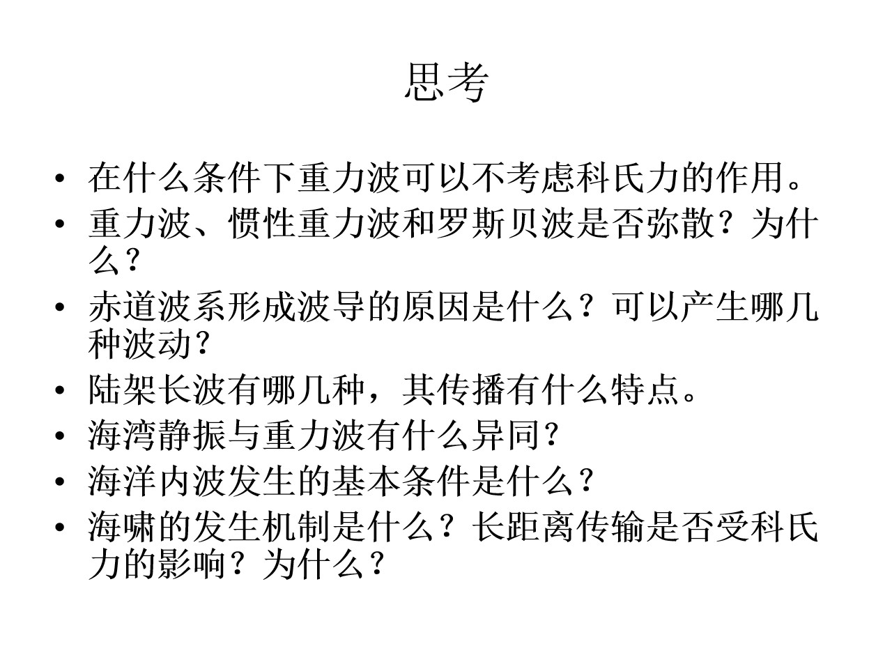

先看框架：四个判据
七道题其实在问同一件事：在什么尺度上，重力、旋转、层结、边界谁说了算？
把这句话拆成四个判据，后面每一题都只是其中一个判据的应用。
七题的主线：第 1 题问“能不能不要 f”；第 2 题问“频散由谁决定”；第 3、4 题问“边界怎样把波陷住”；第 5 题问“边界怎样把行波变成驻波”；第 6 题问“层结加扰动会怎样”；第 7 题是“长波但高频”的极端例子。
01 · 科氏力：什么时候可以不要
在什么条件下重力波可以不考虑科氏力的作用。
当 \(\sigma \gg f\)——周期远短于惯性周期、波长远小于变形半径时，科氏力可以忽略。
旋转浅水波的频散关系是
科氏力的相对重要性约为 \((f/\sigma )^{2}\)。因此“忽略科氏力”可以写成两个等价判据：
时间判据
\(T \ll 2\pi /f = 12 h / \sin \varphi \)。中纬度惯性周期约 14–24 h；周期几分钟到几小时的风浪、涌浪、海啸都满足。
空间判据
\(\lambda \ll 2\pi R_{d}\)，\(R_{d} = \sqrt{gH}/f\)。正压 \(R_{d} \approx 2000 \mathrm{km}\)，斜压第一模态约 25–50 km；即 \(kR_{d} \gg 1\)。
- 低纬：赤道 \(f \to 0\)，科氏力本身消失；但 \(\beta \) 效应接手，长波变成赤道波或罗斯贝波。
- 小盆地：盆地尺度 \(L \ll R_{d}\)（穿越时间远短于惯性周期）时，旋转也可忽略，例如小湖静振。
物理图像：科氏力让水质点偏转，把往返振动变成椭圆或旋转运动。振动很快时，质点在一个惯性周期内还来不及明显偏转，波已经传过去了——不是科氏力“小”，而是它“来不及”。
02 · 三类波：谁频散，谁不频散
重力波、惯性重力波和罗斯贝波是否弥散？为什么？
一般情况都频散；但各有非频散极限：浅水重力波、短惯性重力波、长罗斯贝波。
先把说法统一：频散（弥散）指相速 \(c = \sigma /k\) 随波长变化，波包在传播中会散开；等价地，\(c \ne c_{g}\)，且 \(c_{g}\) 依赖 k。
表面重力波
深水
强频散。长波（涌浪）先到、短波后到，就是涌浪频散。
浅水（\(\lambda \gg H\)）
非频散。潮波、海啸在浅水中的保形传播就靠这一点。
所以“重力波是否频散”取决于水深与波长之比：深水频散，浅水长波不频散。考虑表面张力时 \(\sigma ^{2} = gk + \gamma k^{3}/\rho \)，仍然频散，并存在最小相速。
惯性重力波
一般频散。两个极限：\(kR \gg 1\) 时 \(\sigma \approx k\sqrt{gH}\)，趋于非频散；\(kR \ll 1\) 时 \(\sigma \to f\)，相速形式上发散、群速趋于零，能量几乎不传播，频散极强。
它还有下限频率 f：\(\sigma < f\) 时不能自由传播，运动趋于地转平衡或罗斯贝波。所以惯性重力波像一个高通滤波器。
罗斯贝波
频散，而且是“反常”的：波长越长，相速越大——长波西传快、短波慢。群速为
长波（\(kR \ll 1\)）群速也向西；短波（k 大）群速可以向东。关键极限：\(kR \ll 1\) 时 \(\sigma \approx -\beta R^{2}k\)，\(c = -\beta R^{2}\) 与 k 无关，变为非频散——这正是 ENSO 理论里“长罗斯贝波”能把信号较保形地向西送的原因。
03 · 赤道：一条会陷波的“光纤”
赤道波系形成波导的原因是什么？可以产生哪几种波动？
因为赤道处 \(f = 0\) 且变号，\(\beta \) 提供恢复力；波被 Hermite 函数陷在赤道附近，宽度约为 \(\sqrt{c/\beta }\)。
为什么赤道能形成波导
- \(f = 0\) 且变号。赤道处科氏参数为零，向两极 \(f = \beta y\) 增大并改号。频率 \(\sigma \) 的波只能在 \(|f(y)| < \sigma \)，即 \(|y| < \sigma /\beta \) 的纬度带内传播；再向极地变成倏逝波，被“全反射”回来。
- \(\beta \) 提供恢复力。经向位移的流体质点受到 \(\beta y\) 项作用，产生回复力，形成经向振荡。
- 数学上是被陷住的谐振子。赤道 \(\beta \) 平面分离变量后，经向结构满足谐振子方程，解为 Hermite 函数乘高斯包络，宽度为赤道罗斯贝变形半径 \(L_{eq} = \sqrt{c/\beta }\)。
- 不能建立稳定地转平衡。赤道附近 f 变号，大尺度扰动只能以波的形式传播；东、西边界还会反射，形成完整波系。
尺度：正压 \(c \approx 200 m/s \to L_{eq} \approx 3000 \mathrm{km}\)；斜压第一模态 \(c \approx 2.5 m/s \to L_{eq} \approx 300 \mathrm{km}\)。波被限制在几个 \(L_{eq}\) 之内。
能产生哪几种赤道陷波
| 波型 | 频散关系 | 传播方向 | 特点 |
|---|---|---|---|
| 赤道开尔文波 | \(\sigma = ck\) | 只能向东 | 非频散，\(v = 0\)，u 与 \(\eta \) 同相 |
| 赤道罗斯贝波（\(n \ge 1\)） | \(\sigma \approx -\beta k / [k^{2} + (2n+1)\beta /c]\) | 向西 | 频散，长波快 |
| 混合罗斯贝-重力波（\(n = 0\)） | \(\sigma ^{2} - ck\sigma - \beta c = 0\) | 长波向西、短波向东 | 连接罗斯贝支与重力支 |
| 赤道惯性重力波（\(n \ge 1\)） | \(\sigma ^{2} \approx c^{2}k^{2} + (2n+1)\beta c\) | 可东可西 | 有下限频率 |
生成机制：赤道风爆发（MJO）、赤道流系不稳定、东/西边界反射、潮汐与地形相互作用等。开尔文波向东、罗斯贝波向西，两者在边界反射后可以互相转换——这是 ENSO 充放电理论的核心。
04 · 陆架长波：被海岸拴住的波
陆架长波有哪几种，其传播有什么特点。
常见的是开尔文波、陆架波、边缘波，另外还有双开尔文波；它们都被海岸/地形陷获，北半球“岸在右、浅水在右”。
K开尔文波
恢复力是重力 + 科氏力，跨岸方向地转平衡。\(\sigma = kc\)，\(c = \sqrt{gH}\)，非频散；跨岸速度 \(v = 0\)，振幅从岸向外按 \(e^{-x/R}\) 衰减，\(R = c/f\)。
S陆架波
地形罗斯贝波。恢复力是位涡守恒 + 底坡，\(\sigma < f\)（亚惯性），一般频散；振幅集中在陆架/陆坡，向外海指数衰减，有多个模态。
E边缘波
被海滩坡度陷获，可在岸线附近传播；有 Stokes 边缘波（超惯性）和亚惯性边缘波，对海岸爬高和海滩地形演变很重要。
D双开尔文波
沿深度阶跃（陆架坡折）传播，两侧都指数衰减，单向传播，相速介于 \(\sqrt{gH_{1}}\) 与 \(\sqrt{gH_{2}}\) 之间。
共同传播特点
- 能量沿等深线或岸线传播，被地形和海岸陷获，向外海衰减。
- 北半球“岸在右、浅水在右”：沿东边界（大陆西岸）向极，沿西边界（大陆东岸）向赤道；南半球相反。
- 频散性不同：开尔文波非频散，陆架波一般频散，但两者沿同样的方向传播。
- 是沿岸信号的通道：风暴、潮汐、ENSO 信号都靠它们沿岸传播；摩擦、散射和底形变化会让它们衰减、变形。
05 · 海湾静振：被关起来的重力波
海湾静振与重力波有什么异同？
静振是边界围成的驻波型重力波；重力波是开阔水域的行波。两者恢复力相同，波形、能量和周期性质不同。
静振（seiche）是封闭或半封闭水体（湖、海湾、港湾）中的驻波式自由振荡，由风、气压突变、地震或潮汐激发，是水体对强迫的共振响应。
闭合盆地
两端为腹点，中间出现节点；基频 \(n = 1\)。
一端开口的海湾
开口端近似为节点，封闭端为腹点；这就是 Merian 公式。
相同点
- 都是表面重力波，恢复力都是重力；\(\lambda \gg H\) 时都满足浅水方程，\(c = \sqrt{gH}\)。
- 静振可以看作两列相反方向传播的重力波叠加成的驻波，所以本质上是重力波的一种特殊形态。
- 都有节点、腹点，都可能共振放大，都受摩擦阻尼；大尺度时都受科氏力影响（可形成开尔文波型驻波、无潮点）。
不同点
| 海湾静振 | 开阔海重力波 | |
|---|---|---|
| 波形 | 驻波，节点、腹点固定 | 行波，波形传播 |
| 能量 | 净能通量为零（只在强迫/阻尼时变化） | 净能通量非零，定向输运 |
| 周期 | 离散本征周期，由盆地几何决定 | 连续谱，由生成机制决定 |
| 边界 | 靠岸壁或湾口反射维持 | 不需要闭合边界 |
| 相位 | \(\eta \) 与 u 在时间上相差 90° | 浅水行波中 \(\eta \) 与 u 同相 |
| 公式 | \(T = 2L/\sqrt{gH}\) 或 \(4L/\sqrt{gH}\) | \(T = \lambda /\sqrt{gH}\)，\(\lambda \) 由源决定 |
为什么相位不同：驻波可以写成 \(\eta = A \cos (kx) \cos (\sigma t)\)，由动量方程得到 \(u \propto \sin (kx) \sin (\sigma t)\)，时间上正好差 90°；行波 \(\eta \) 与 u 同相，所以波峰处流速也最大。
06 · 内波：层结 + 扰动
海洋内波发生的基本条件是什么？
三个条件：稳定层结、让等密面偏离平衡的扰动、以及频率落在 \(f < \sigma < N\) 的窗口内。
① 稳定的密度层结
密度随深度增大（轻上重下），即
这是内波恢复力（浮力）的来源。没有层结就没有内波；实际海洋里，温跃层或盐跃层提供强层结。
② 一个让等密面偏离平衡的扰动
- 正压潮流过起伏地形 → 内潮；
- 风应力 → 近惯性内波（尤其在混合层）；
- 地转调整 → 锋面、涡旋、对流；
- 剪切不稳定、斜压不稳定；
- 表面波非线性相互作用；
- 河流羽流、海底滑坡、地震等。
③ 频率必须落在窗口里
\(\sigma > N\) 或 \(\sigma < f\) 时变为倏逝波，不能自由传播（\(\sigma < f\) 时运动趋于地转或罗斯贝波）。
补充条件
- 界面波（两层流体）需要密跃层和界面扰动；内孤立波还需要非线性与频散平衡（KdV），以及有限振幅。
- 背景流会多普勒平移频率、产生临界层；强剪切可使内波不稳定（\(\mathrm{Ri} < 1/4\)）而破碎。
- 内波的水平和垂向尺度受层结、水深、Rossby 半径约束；第一斜压模态最常见。
07 · 海啸：长波，但不低频
海啸的发生机制是什么？长距离传输是否受科氏力的影响？为什么？
海底垂直位移辐射出浅水长波；远距离传播基本不受科氏力影响，因为 \(\sigma \gg f\) 且 \(kR_{d} \gg 1\)。
发生机制
- 源：海底浅源大地震（逆冲断层）造成大面积海底垂直位移；此外还有海底滑坡、火山侧翼崩塌、火山喷发、陨石撞击。
- 辐射长波：水体被抬升或下沉后，在重力作用下恢复平衡，向外辐射长重力波。源区水平尺度几十到几百 km，远大于水深（约 4 km），所以是浅水长波。
- 深海传播：\(c = \sqrt{gH} \approx 200 m/s \approx 700 \mathrm{km}/h\)（\(H = 4 \mathrm{km}\)）；振幅只有 cm–m 量级，波长几百 km，波形常呈 N 波。此时频散很弱（\(\lambda \gg H\)），可用浅水方程；\(\lambda \) 与 H 可比时需 Boussinesq / KdV 修正。
- 近岸放大：H 减小 \(\to c\) 减小，能量通量守恒使振幅按 Green 定律 \(A \propto H^{-1/4}\) 增大（考虑折射时还有宽度因子 \(b^{-1/2}\)）；折射使波峰趋于平行岸线；浅化、爬高、淹没；港湾共振、边缘波可局部放大。
- 周期：几分钟到约 1 小时，典型 10–40 min。
长距离传播受科氏力影响吗？
结论：一阶近似下不受显著影响；科氏力是次要效应。
频率判据
\(T = 30 \operatorname{min} \to \sigma \approx 3.5\times 10^{-3} s^{-1}\)；中纬度 \(f \approx 1\times 10^{-4} s^{-1}\)；\(\sigma /f \approx 35 \gg 1\)。
空间判据
\(\lambda = 300\text{–}500 \mathrm{km}\)；正压 \(R_{d} = \sqrt{gH}/f \approx 2000 \mathrm{km}\)；\(kR_{d} \approx 25\text{–}40 \gg 1\)。
所以海啸相对于惯性周期是“高频”的、相对于变形半径是“短波”的，基本按非旋转浅水波传播：沿大圆路径（受海底地形折射），不被科氏力明显偏转、陷获或频散；到达时间主要由水深和路径决定。
只有满足 \(\sigma \lesssim f\)（周期 ≳ 惯性周期，即 > 12–24 h）或 \(\lambda \gtrsim 2\pi R_{d}\)（上万 km）的超长波，旋转才重要。海啸源尺度有限，很少产生这么长的波。
但以下情形科氏力有“二阶”作用：
- 海啸会激发沿岸开尔文波和边缘波，这些是旋转陷获的，会影响后续波列、到达时间和近岸增幅；
- 波过后会留下弱的地转流或涡（地转调整）；
- 在浅海、陆架（\(R_{d}\) 变小）或高纬（f 大）时，旋转的相对作用增强；
- 赤道附近 \(f \to 0\)，旋转更不重要，但 \(\beta \) 效应可能产生赤道波。
对照表：把十种波放在一起
频散关系是线性、无背景流的形式；实际海洋里层结、地形和平均流都会修正它。
| 波型 | 恢复力 | 频散关系 | 频散性 | 传播 / 备注 |
|---|---|---|---|---|
| 表面重力波（深水） | 重力 | \(\sigma ^{2} = gk\) | 强频散 | 各向同性，\(c = \sqrt{g/k}\) |
| 表面重力波（浅水） | 重力 | \(\sigma = k\sqrt{gH}\) | 非频散 | \(c = c_{g} = \sqrt{gH}\) |
| 惯性重力波 | 重力 + 科氏 | \(\sigma ^{2} = f^{2} + gHk^{2}\) | 一般频散 | \(\sigma \ge f\)；短波趋于非频散 |
| 海岸开尔文波 | 重力 + 科氏 + 岸 | \(\sigma = kc\) | 非频散 | 北半球岸在右 |
| 陆架波 | 位涡 + 地形 | \(\sigma < f\)（依地形） | 一般频散 | 北半球浅水在右 |
| 罗斯贝波 | \(\beta \) 效应 | \(\sigma = -\beta k/(k^{2}+l^{2}+R^{-2})\) | 频散；长波极限非频散 | 向西，长波快 |
| 赤道开尔文波 | 重力 \(+ \beta \) | \(\sigma = ck\) | 非频散 | 只能向东 |
| 赤道罗斯贝波 | \(\beta \) 效应 | \(\sigma \approx -\beta k/[k^{2}+(2n+1)\beta /c]\) | 频散 | 向西 |
| 海啸 | 重力 | \(\sigma \approx k\sqrt{gH}\) | 弱频散 | \(\sqrt{gH}\)；科氏次要 |
| 海湾静振 | 重力 + 边界 | 驻波，离散本征周期 | — | \(T = 2L/\sqrt{gH}\) |
六个易错点
- “长波”不等于“低频”。海啸 \(\lambda \) 很长，但 T 很短，相对惯性周期是高频，所以科氏力弱。
- 浅水重力波非频散，但加旋转后（Poincaré 波）又频散。\(\sigma ^{2} = f^{2} + gHk^{2}\) 使 c 重新依赖 k。
- 罗斯贝波一般频散，但长波极限非频散。\(kR \ll 1\) 时 \(\sigma \approx -\beta R^{2}k\)，\(c = -\beta R^{2}\)。
- 开尔文波非频散，陆架波一般频散。前者 \(\sigma = kc\)，后者相速依地形和模态而变。
- 赤道波导的宽度是 \(\sqrt{c/\beta }\)，不是 \(\sqrt{gH}/f\)。后者在赤道发散，不能用来描述赤道陷波。
- 静振不是另一种恢复力。它仍是重力波，只是被边界关成了驻波。
30 秒复述
- 为什么风浪可以忽略科氏力，而 M2 潮波不能？
- 深水重力波频散、长罗斯贝波不频散，判据各是什么？
- 赤道波导的宽度由什么决定？为什么不是 \(\sqrt{gH}/f\)？
- 开尔文波和陆架波在传播方向上有什么共同点？
- 海啸是长波，为什么科氏力仍然可以忽略？
能用自己的话答出这五句，这组题就不是背公式了。
教材连接与作业原图
对应教材 Ch.8（波动、潮汐、沿岸）。这七道题的主线是判据：\(\sigma /f\)、\(kR_{d}\)、kH、\(f < \sigma < N\)——先判断谁重要，再决定用哪个公式。
